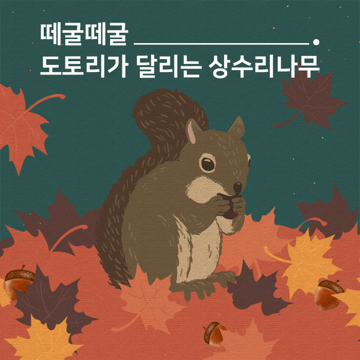

제발, 도토리를 주워 가지 마세요
도토리는 많은 숲속 동물들의 겨울나기를 위한 중요한 식량 인 걸 알고 계시나요?
가을이 되면 길가에 떨어진 도토리를 흔히 볼 수 있습니다. 신기한 마음에 도토리를 줍기도 하고 심지어 배낭 가득 싹쓸이하는 사람도 많은데요.
떼굴떼굴 다람쥐가 좋아하는 도토리는 가을 열매를 대표하지요.
도토리가 열리는 나무를 우리는 ‘참나무’라고 해요. 참나무는 상수리나무, 굴참나무, 졸참나무,갈참나무, 떡갈나무, 신갈나무를 모두 일컫는 말이에요. 그 중 가장 맛이 좋은 도토리는 상수리나무의 도토리입니다. 얼마나 맛있었으면 임진왜란 때 임금님의 수라상에 이 나무의 도토리묵을 만들어 올려 상수리라는 이름을 붙였을까요?
작은 동물인 다람쥐, 청설모에서부터 큰 야생동물인 멧돼지, 반달가슴곰까지 도토리로 춥고 긴 겨울을 견뎌냅니다.
말랑말랑한 도토리로 만든 묵은 건강에도 좋고 맛도 좋은 영양식인데요. 가을철 도토리는 야생동물들에게도 중요한 식량입니다.
도토리가 없어 이 동물들이 겨울을 나지 못한다면?
도토리를 먹는 작은 동물들의 개체 수는 점차 줄고, 이 동물을 먹고 사는 상위포식자 역시 살아가는데, 어려움을 겪게 되겠지요.
가을에 도토리가 없으면 동물뿐 아니라 곤충도 곤란한 것은 마찬가지.
바구미, 거위벌레는 도토리에 알을 낳는데 도토리가 없으면 산란 장소를 잃게 되죠.
나아가 식물도 위협받게 됩니다.
도토리가 줄어들면, 도토리에서 싹을 틔워 번식하던 상수리나무의 수도 줄게 되고, 그렇게 되면 상수리나무 잎을 먹고 사는 동물과 나무 수액을 먹는 곤충도 역시 큰 위협을 받게 됩니다.
이에 도토리 채취는 법으로도 금지하고 있습니다.
‘나 하나쯤은 괜찮겠지,’ 라고 생각한 도토리 채취가 숲속 생태계를 위협하는 행위라는 사실, 꼭, 기억하세요!